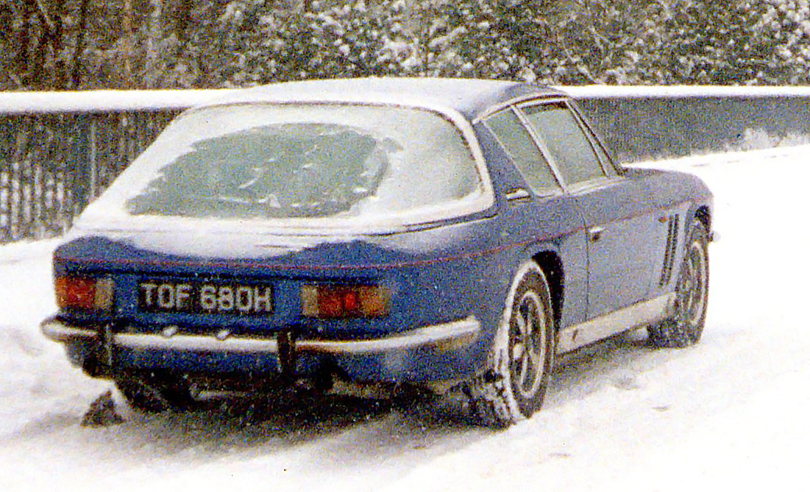

AWD Does NOT Mean You Stop Faster in Snow
All-wheel drive gets you moving in snow. It does absolutely nothing to help you stop.

Photo: Francis pullen, Public Domain, via Wikimedia Commons
.jpg){kind=link}
Every winter, the ditch fills with SUVs. Not old sedans on bald tires — big, capable, all-wheel-drive SUVs, driven by people who felt completely safe right up until the moment they weren't. The reason is the most dangerous myth in winter driving: the belief that all-wheel drive makes you safe in snow. It doesn't. It makes you confident, which is a different thing entirely — and confidence without grip is how cars end up in ditches.
Why it's wrong
All-wheel drive sends power to all four wheels, which helps you accelerate from a stop and climb hills in snow. That's real, and it's useful. But stopping is a completely different job, and AWD plays no part in it. When you brake, all four wheels are already braking — on every car, two-wheel drive or all-wheel drive. What decides your stopping distance is the grip between your tires and the road, and that comes down to your tires, not your drivetrain. An AWD car on all-season tires will take longer to stop in snow than a front-wheel-drive car on proper winter tires. The danger is that AWD masks how slippery it is: you pull away from a light easily, you feel in control, and you drive faster than the conditions allow — until the moment you need to stop or turn, and discover the grip was never there.
The right way
- Put winter tires on your AWD car. This is the single biggest winter safety upgrade there is, for any car. AWD plus winter tires is the best combination. AWD plus all-seasons is a false sense of security.
- Drive like you're on ice, because you might be. Smooth, gentle inputs. Brake early and lightly. No sudden steering. The AWD system can't change physics.
- Leave extra following distance. Stopping distances on snow are several times longer than on dry pavement. The gap in front of you is your real safety system.
- Test the grip early. On an empty stretch, at low speed, give the brakes a gentle squeeze to feel how much grip is actually there. Do it before you need to know.
- Don't trust the feeling of control. AWD makes starting easy, which makes the road feel safer than it is. Judge the conditions by what you see — snow, ice, slush — not by how the car feels pulling away.
- Know your car's limits. AWD doesn't help in a slide either. Once the tires lose grip, every car slides the same way. Check your owner's manual for how your traction and stability systems work.
The rundown
AWD helps you go. Your tires decide whether you stop. Put winter tires on the AWD car, drive like the road is slippery, and never let the easy launch fool you into thinking the road is safe. The ditch doesn't care how many wheels are driven.
← Back to the winter tires guide